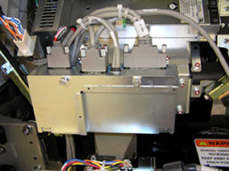
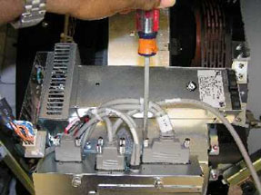
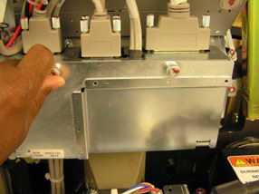
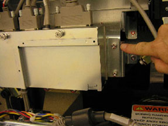

Operating Documentation
Direction 5193574-800, Rev# 22
LightSpeed 7.X Service Methods
Module Version 3.0, Version Date 10/20/08
Operating Documentation |
| Required Persons | Preliminary Reqs | Procedure | Finalization |
|---|---|---|---|
| 1 | Not Applicable | 60 mins | 60 mins |
This procedure defines the steps necessary to replace the stationary side Fan Control Module.
| Last Revised: | July 1, 2008 |
| Item | Qty | Effectivity | Part# | Manufacturer | |
|---|---|---|---|---|---|
| FE Toolkit | 1 | - | - | - | |
| 5 mm hex wrench | 1 | - | - | - | |
| LOTO Kit | 1 | - | - | - | |
| Front Cover Dollies | 1 | - | - | - | |
| Item | Qty | Effectivity | Part# | Manufacturer |
|---|---|---|---|---|
| Tie-wraps | AR | - | - | - |
| Hand Towels, for clean-up | AR | - | - | - |
| Item | Qty | Effectivity | Part# | Manufacturer | |
|---|---|---|---|---|---|
| CFC Module | 1 | - | - | - | |
| ||||
| Electrocution hazard | ||||
| High Voltages present. | ||||
| Use proper lockout/tagout procedures before replacing components. |
| ||||
| Shock Hazard | ||||
| Voltage Present | ||||
| No service on left side while energized. |
| ||||
| Follow ALL required safety and PPE procedures customary for your organization, when working on this product. | ||||
| Condition | Reference | Effectivity |
|---|---|---|
Only trained service personnel should service the GE CT Scanner. | - | - |
Remove gantry right side cover.
Refer to Parts Replacement → Gantry → Enclosure → (Cover Removal Procedures).
Turn OFF the Axial Drive, HVDC and 120 VAC switches on the gantry’s Service Switch Panel.
Remove the gantry left side cover, top covers and rear cover.
| NOTE: | Service cannot be performed from the left side for rooms with limited access between left side and room wall. |
Perform all required LOTO activities to ensure no power to the gantry.
The CFC module is located on the left side of the gantry between the stationary 48VDC power supply and TGPU. See Illustration 1.
Illustration 1: CFC Module

The CFC module has 4 cables on the top. Disconnect all 4 cables before removing the module. See Illustration 2.
Illustration 2: Disconnecting CFC Cables

Using the 2 thumbscrews, open the cover on the CFC module. See Illustration 3.
Illustration 3: CFC Module Cover

Inside, remove the Molex connector from J2.
The CFC module is secured to a gantry mounting plate with 6mm hex-head screws on each side. Remove all screws with a 5 mm hex wrench. See Illustration 4.
Illustration 4: CFC Mounting Plate

Slide the module toward the back of the gantry to remove.
Install the new control module using the 6 mm (5 mm hex wrench) screws.
Reconnect all cabling removed, reference section above.
Install CFC front cover after installing the molex internal connection.
Install the gantry rear cover and top covers.
Refer to Parts Replacement → Gantry → Enclosure → (Cover Procedures).
Remove the LOTO and power up the system.
Enable 120 VAC HVDC and Axial Drive service switches from the service switch panel. Press the table drives enable button on the lower right corner of the service switch panel.
Check to make sure all top cover fans come on right after gantry power up and that the gantry blower fan on the lower left comes on. Fans come on at 50% during hardware reset process.
Install the gantry left and right side covers.
Monitor the operator message area until the system indicates the detector temperature has returned to normal.
Perform a [Fastcal] from the [Daily Prep] button on the Operator console.
Perform a [Quality Assurance Test] from the [Functional Checks] menu of the service manual to ensure system operation.